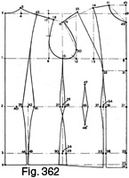
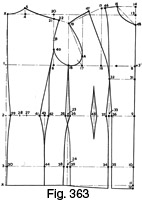
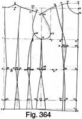

Early 1940's—Ladies' Garment Cutting and Making
by
F. R. Morris
Appendix
LADIES' GARMENT CUTTING AND MAKING has now been before the tailoring trade for over twelve years and, while reports from readers have always been of the highest praise, it is felt that with the changing of style in cutting to a more accentuated fit and the changing of women's figures through the perfecting of foundation garments, uplift brassieres, and the like, the system perhaps needs some modification in practice though not in general principles.
While the system as laid down throughout this work is adaptable to any demands made on it, to save unnecessary fitting adjustments it has been decided to describe the basis systems in a revised form suitable to the modern style of cutting and the modern figure. The necessary adjustments are from the point of view of style only; the basic principles of the original system are retained.
The tendency of modern styling is to accentuate the width of shoulders at back and front of the scye, what is known in the trade as "drape," and whilst for a short period, in the "New Look" days, we had styling that narrowed the shoulders at front and back in order to accentuate the bust, the normal trend of styling is for width through the shoulders, tapering to a narrow waist.
To the users of the original system, this change of styling would present no difficulties; it would involve only the addition of width in the parts where required, and this would mean an easing out of the constructional points throughout the draft. For example, we need a ½-inch wider back and forepart over the bust. The addition of the extra inch in the locations, where required, would involve adjustments in the hip overlap and the waist suppression factors. The neckpoint forward from the front of the scye would remain constant in its present position, the extra ½ inch being spread over the whole across the bust width and necessitating an increased bust dart to achieve the increased bust contour shape. Below the bust, there would not be any change in the fitting of the waist and hip sections, unless it is desired to accentuate the waist still further, as is customary in styling these days. The pattern would need the extra width added through the bust to be suppressed at the hip level.
The extra width through the back is located at the sides and calls for increased waist suppression, but not of hip suppression as basically the blade points at point of hip prominences still bear the same relationship to each other as in the original draft system.
The shoulder slope remains unchanged, allowing for a small pad on the point. For thicker pads it is an elementary procedure to raise the height of shoulder slope by adjustment of the point located on the line squared up from the centre of the scye.
Basis Draft for Short Jacket (Fig. 362)
The following is a description of changes and revision necessary to the basis draft for short jackets in order to eliminate unnecessary adjustments at fitting time for the achievement of the modern style outline.
It must be understood that the changes made are within the framework of the basis system as described previously and may be incorporated in the block pattern without recourse to the present system draft, if so desired.
The trend of style to-day is for a semi-draped jacket; tomorrow we may again be back to form-fitting style throughout the shoulders, but to-day semi-drape and drape are the current fashions.
It does not present many difficulties to add width in the pattern where required, but for those cutters who prefer the width to be incorporated in a systematic draft, then the following will be of value.
It has been decided, for example, to add an extra 1 inch across back and extra 1 inch across chest, i.e. ½ inch on the ½ x back measure and ½ inch on the ½ x chest measure. These additions will provide for a moderately draped front and back scye.
The measurements for the draft will read as follows—
- Chest = 34 inches.
- Bust = 36 inches.
- Waist = 28 inches.
- Hips = 40 inches.
- Natural waist =15½ inches.
- Full length = 26 inches.
- Half back = 7¼ inches.
- Working Scale = half the bust girth = 18 inches.
To draft—
Commence by drawing line X to X, the full length of the jacket.
- 1 from X = one-third scale plus 1¾ inches = 7¾ inches.
- 2 from X = waist length 15½ inches.
- 3 from 2 = 8 inches for hip level.
- 4 from X = one-sixth scale less ¼ inch.
- 5 from 4 = 1 inch. Shape the neck curve from 5 to X.
- 6 from 1 = half back width plus ¼ inch = 7½ inches.
- 7 is squared from 6.
- 8 from 1 = half bust plus 3 inches.
- Square up to 9 and square back from X.
- 10 from 9 = one-twelfth scale.
- 11 from 10 = one-sixth scale.
- 12 from 8 = one-quarter bust less ¼ inch.
- 13 from 12 = one-sixth scale.
- 14 squared from 13 = 8 to 10 less ½ inch.
The width of scye from 6 to 12 may also be found as an eighth of the bust measure plus ¼ inch.
This is a useful variation from the system when a draft is being made on direct measure methods, using the across-back measure and across-bust measure plus the width of scye measurement as indicated.
- 15 is midway 6 to 12.
- 16 squared from 15 = one-third scale plus ¼ inch.
- Square up from 6 to 7, intersecting the shoulder slope line from 16 to 5 at 17.
- 18 from 17 = 1 inch.
- 19 from 14 = 5 to 18 less 3/8 inch.
- 20 from 12 = 1½ inches. Join 20 to 19 and hollow the front of size ½ inch.
- Square down from 8 to 21, 22 and 23.
- 24 from 23 = ¾ inch.
- 25 and 26 are squared from 15.
- 27 and 28 are each 3/8 inch.
- 29 and 30 are each 5/8 inch, making hips overlap 1 inch at half the difference between bust and hips less 1 inch. This quantity is calculated as follows—
- From 1 to 8 = half bust plus 3 inches = 21 inches.
- From 3 to 22 = also 21 inches.
We need at the hips, half hip measurement plus 1¼ inches for ease and seams, ¾ inch and ½ inch for two sideseams = 21¼ inches, which is ¼ inch more than 3 to 22.
We then need to suppress the front panel seams ½ inch and the back panel seams ¼ inch = ¾ inch.
This makes a total of 1 inch which must be added at the sideseams to compensate.
This equals half the difference between bust and hip measurements less 1 inch as stated.
To look at this from another angle—
- 1 to 8 = half bust plus 3 inches = 21 inches.
- 3 to 22 = 21 inches also.
- Half the difference between bust and hip measurements = 2 inches.
- Add this 2 inches to 3 to 22 = 23 inches.
- We need 21¼ inches over the hips.
- Difference = 1¾ inches to be reduced on the draft.
- Reduce ¼ inch at the back panel, ½ inch at the front panel and 1 inch from the side of seams.
Therefore, on this draft, the hips overlap always equals half the difference between bust and hip measurements less 1 inch providing that ¾ inch is also reduced at front and back panel seams.
FORMULA
- Half hip plus 2 inches = 22 inches = 1¼ inches seams/ease, three-quarter panel suppression.
- Half bust plus 3 inches = 21 inches
- Difference = 1 inch
- Difference = hip overlap at sideseams.
- 31 from 8 = 2 inches for bust point level.
- 32 from 31 = one-sixth scale plus 1 inch.
- Square from 32 to 34 and 35.
- 33 is pivoted from 32 and 14.
- 33 from 14 = 14 to 11.
- 36 and 37 from 34 are each ½ inch, making 1 inch standard waist panel suppression for this style of jacket.
- 38 from 35 = ½ inch or the amount of extra width added through the bust.
- Shape the front panel seams as shown.
The question of waist suppression now is considered. We have a standard ¾ inch taken from the sideseams, plus 1 inch from the front panel seams, plus ½ inch for seams, which makes a total of 2¼ inches to be added to the tight waist measure of 28 inches.
For ease on the draft, 1½ inches may be allowed which is sufficient these days.
Therefore the total allowances on top of the waist measurement are as follows—
- 2¼ inches for suppressions at side and front seams and allowances for two sideseams at ¼ inch each.
- 1½ inches for general overall ease.
- Total = 3¾ inches to be added to the half waist measure.
The formula then becomes—
- Half the bust measure plus 3 inches = 21 inches.
- Half the waist measure plus 3¾ inches = 17¾ inches.
- Difference = 3¼ inches
- Suppression, one-third front and two-thirds back = 2 1/8 inches back and 1 1/8 inches front.
- Therefore 39 from 21 = waist measure plus 3¾ inches.
- Surplus waist increment = 39 to 2.
- One-third of 2 to 39 = 40 to 39.
- 41 from 39 = 40 to 2.
- 42 is midway.
- Square from 42 to 43.
- 44 from 43 = ¼ inch.
- 45 from 18 = 33 to 19.
- Shape the back panel seams as shown.
- Suppress at 46, the quantity indicated from 40 to 39.
- 47 from 46 = 4 inches.
- 48 from 46 = 3½ inches.
- Shape out the dart as shown.
- 49 from 10 = one-sixth of scale. Join 49 to 11 and hollow the gorge ¾ inch.
- The back sleeve pitch is located at half X to 1 up from 6.
- The front pitch diagonally from 12.
The draft is constructed to fit a figure of 5 feet in height.
The across-chest width is now a style factor rather than a fitting factor in modern cutting and can vary from half scale, less ¼ inch to half scale less 1 inch, depending on the amount of drape required in the jacket.
It is becoming increasingly apparent in modern pattern construction that the overall measurement of the draft is of no comparison to the size of the figure. The style factor plays an increasing part in the allowances over the bust measure, and, whereas in the past the allowances for ease, etc. had some relationship to the size of the bust, modern styling tends to ignore this and concentrate on the sense of style balance and, by predetermination, decide the style factor required in the draft in accordance with the alternate style objective.
For example, a pattern cutter may decide to cut a full draped jacket. He decides on a certain width of back and then adds to it a standard width of scye which his experience tells him is necessary and then adds his across-bust width to the amount decided upon. To further this example, take a 34 bust draft. He will decide to use a 7½ inch half back width plus a ¼-inch seam; this will register 7¾ inches. Add to this amount the normal scye width of 4½ inches, and then he decides the draped front scye will carry an 8¼-inch across-bust width. The overall total of these allowances will be 7¾ inches + 4½ inches + 8¼ inches = 20½ inches or 3½ inches over the bust size. Going back to our original close-fitting basis draft, this would indicate a jacket large enough to fit a 37 bust figure. On the 34 bust figure, however, the jacket will carry a well-draped back and front scye and with the waist accentuated by the normal suppressions, will give a style outline of wide shoulders and narrow waist and hips.
So to be au fait with style in relation to pattern cutting is an important point. There is so much that can be disregarded in pattern systems in order to gain style and it is necessary to remember that a system is only the foundation of cutting, the scaffolding to which style is added.
In the following diagram this subject is discussed in a practical way and shows the building up of a draft for pre-determined measurements.
The Style Factor (Fig. 363)
The first consideration is the style of jacket we are going to draft. If a draped scye jacket is required, we must consider the quantity of drape, whether semi- or full drape. For this example, we will decide on a full drape.
The widths to be considered are as follows—
1. The back width.
2. The scye width.
3. The across-chest or bust width.
Normal widths for the above are, 6½ inches for the half back, 4½ inches for the scye, and 7¾ inches for the across-chest or bust.
Measures—
- Chest = 32 inches.
- Bust = 34 inches.
- Waist = 26 inches.
- Hips = 38 inches.
- Natural waist = 16 inches.
- Full length = 26 inches.
- Across back = 7¼ inches.
- Scale = half chest 17 inches.
- Height = 5 feet 4 inches.
To draft—
- Draw a line from X to X, the full length, plus a seam.
- 1 from X = one-third of scale plus 1¾ inches, for normal size depth plus an extra ½ inch for the increased height, total 8 inches.
- 2 from X = waist length plus a seam.
- 3 from 2 = 8 inches for hip level.
- 4 from X = one-sixth of scale less ¼ inch.
- 5 from 4 = 1 inch.
- 6 from 1 = half back plus a seam, 7½ inches.
- 7 from 6 = one-quarter scale plus ¼ inch, 4½ inches.
- 8 from 7 = across chest, half scale less ¼ inch, 8 ¼ inches.
- This measure shows ½ inch extra allowed for front drape.
- Square from 8 to 9, 10 and 11.
- 12 from 11 = ¾ inch.
- Square from X to 13.
- 14 from 13 = one-twelfth of scale.
- 15 from 14 = one-sixth of scale.
- 16 from 7 = one-sixth of scale.
- 17 from 16 = 8 to 14 less ½ inch.
- 18 is midway 6 to 7.
- 19 from 18 = one-third of scale plus ¾ inch.
- An extra ½ inch is allowed here on account of the ½-inch increase in size depth.
- 20 is squared from 6.
- Join 19 to 5 to locate 21.
- 22 from 21 = 1 inch.
- Make the front shoulder from 17 to 19, 3/8 inch less than from 5 to 22.
- A is 1½ inches up from 7.
- B is half 1 to X up from 6.
- Square from 18 to 23 and 24.
- 25 and 26 are each 3/8 inch from 23.
- Measure up the waist from 9 to 27, half waist plus 3¾ inches.
- This quantity is made up as follows—
- 1½ inches for ease.
- 1 inch from the front panel suppression.
- 1¼ inches for sideseam suppression and two ¼ inch seams.
- 28 from 27 = one-third of 27 to 2 for the front waist suppression in the dart.
- 28 to 2 = the back waist suppression.
- 29 from 2 = ¾ inch.
- 30 from 3 = ¼ inch.
- 31 from 8 = 2 inches for bust point level.
- 32 from 31 = half 7 to 8.
- Square from 32 to 33 and 34.
- 35 from 34 = ½ inch, or half the difference between half chest and half bust measures.
- 36 and 37 are each ½ inch from 33.
- Overlap at 38 and 39, the hip overlap calculated as follows.
- Half hip 19 inches plus 1¼ inches = 20¼ inches.
- Suppression at 30, 34 and 35 = ¾ inch.
- Total = 21 inches.
- From 3 to 10 = 20¼ inches.
- Therefore hip overlap to make up size to 21 inches = ¾ inch at 38 to 39.
- 40 from 6 = 2½ inches.
- 41 from 29 = 4½ inches.
- 42 from 41 = 28 to 29 or the remainder of the back waist suppression.
- 43 is midway.
- Square down from 43 to 44 and shape the sidebody seams.
- Suppress the quantity from 27 to 28 at the dart at 45.
- 46 from 15 = 2 inches, pivot from 32 and sweep from 46 to 47, making this quantity equal to the dart from 17 to 15.
- 48 from 14 = one-sixth of scale, join to 15 and hollow the gorge run ¾ inches.
The draft is now completed for the drape style basis pattern.
Draft by the Chest Measure (Fig. 364)
This draft will be of interest to readers as it shows an approach to pattern construction that may be new to some students of cutting.
The importance of the chest measure, taken above the bust, has not been fully exploited in cutting systems, and yet the measure, taken in conjunction with the bust measure, provides the answer to the degree of bust prominence.
When measuring a figure, the chest measure registered above the bust line is normally 2 inches less than the bust measure, and it can be said that the two measures are identical up to the front of the scye. This fact indicates that the extra 2 inches is made up by the prominence of the bust. In short, the across-chest measure should be 2 inches less than the across-bust measure.
It is possible after this has been established to draft a pattern by the chest measure as a basis of construction and to add at the bust level the difference between chest and bust measurements; on the draft this would be half the differences between bust and chest.
In this way, we take the framework of the figure as a basis for pattern construction and treat the bust as a local prominence that must be allowed for, as an addition within the framework of constructional lines based upon the chest measure.
Measures as follows—
- Chest = 32 inches.
- Bust = 34 inches.
- Waist = 26 inches.
- Hips = 37 inches.
- Length to waist = 16 inches.
- Full length = 27 inches.
- Across back = 7 inches.
- Height = 5 feet 4 inches.
- Scale = half chest 16.
The scale taken from the half-chest measure is in accordance with the principle of this draft, i.e. a system based upon the chart measure.
To draft—
- Draw a line from X to X, the full length plus a seam.
- 1 from X = one-third of scale plus 1¾ inches, plus ½ inch for extra height factor.
- 2 from X = waist length plus a seam.
- 3 from 2 = 8 inches.
- 4 from X = one-sixth of scale 16.
- 5 from 4 = 1 inch.
- 6 from 1 = half back width gives a seam 7¼ inches.
- 7 from 6 = one-quarter scale plus ½ inch.
- 8 from 7 = half scale less 1 inch.
- Square from 8 to 9, 10, 11.
- 12 from 11 = ¾ inch.
- 13 is squared from X and 8.
- 14 from 13 = one-twelfth of half bust.
- 15 from 14 = one-sixth of scale plus ¼ inch.
- 16 from 7 = one-sixth of scale plus ¼ inch.
- 17 from 16 = 8 to 14 less ½ inch.
- 19 from 18 = one-third of scale plus 1 inch.
- Square from 6 to 20. Join 19 to 5 and locate 21.
- 22 from 21 = 1 inch. Join 17 to 19.
- 24 from 17 = 5 to 22 less 3/8 inch.
- 23 from 7 = 1½ inches.
- Square from 18 to 25 and 26.
- 27 and 28 are each 3/8 inch.
- 29 from 8 = 2 inches.
- 30 from 29 = one-quarter of scale less ½ inch.
- Overlap at 31 to 32, half the difference between chest and bust measurements. 33 from 17 = 17 to 15 pivoted from 30.
- Square from 30 to 34 and 35.
- 36 from 35 overlapped is equal to half 31 to 32.
- 37 from 9 = half waist plus 2¾ inches.
- 38 from 37 = one-third of 37 to 2.
- 39 from 2 = ¾ inch.
- 40 from 3 = ¼ inch.
- 41 from 37 = half 39 to 38. 42 is midway, square down 43 and overlap at the hip, 1 inch.
- 44 from 41 = 2½ inches.
- 45 from 44 = half 38 to 39.
- 46 is midway, square down to 47 and overlap 1 inch.
- 49 and 50 are each 1 inch.
- 48 from 6 = 1½ inches.
- Shape the sideseams as shown, and the back panel seams, commencing the distance 17 to 15 back from 5.
- Suppress the amount 37 to 38 from the front dart at 51.
- 52 from 14 = one-sixth of scale plus ¼ inch.
- Join 52 to 15 and hollow the gorge ¾ inch.
The principle underlying this draft is that while the chest, waist, and hip measurements may remain constant, the bust measurement may be variable and not in proportionate ratio to the other measurements.
For example, the bust measure may be either less or more than the proportionate 2 inch variation with the chest and the increased or decreased size will always be locally and the method of this draft is to apply the variation where actually required.